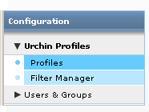
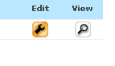
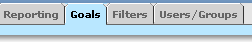
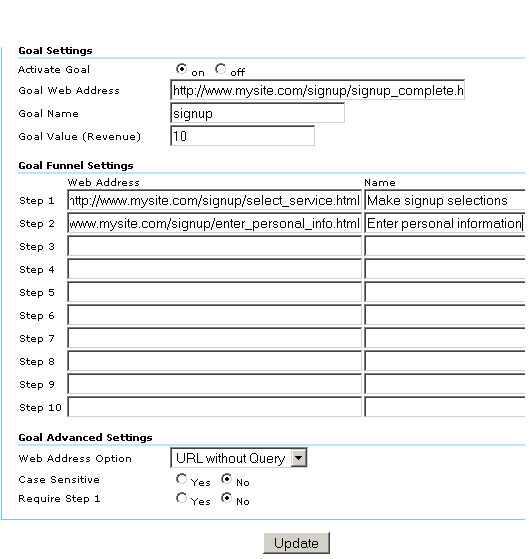

Impostazione di obiettivi di conversione
- Un obiettivo è una pagina del sito web che viene raggiunta dal visitatore dopo aver effettuato un acquisto o completato un'azione desiderata, ad esempio una registrazione o un download. Prima che Urchin possa calcolare i parametri di conversione all'obiettivo, è necessario definire uno o più obiettivi. Per definire un obiettivo occorrono le seguenti informazioni:
- URL della pagina obiettivo
- Specifica una pagina raggiungibile solo dopo aver conseguito un obiettivo. Ad esempio, nel caso in cui l'obiettivo sia una registrazione, la pagina obiettivo deve corrispondere alla pagina di ringraziamento. Se la pagina obiettivo può essere visualizzata dai visitatori che non hanno raggiunto l'obiettivo, i tassi di conversione saranno più elevati.
- nome dell'obiettivo
- Specifica un nome che sarai in grado di riconoscere quando visualizzi i rapporti. Tra gli esempi di possibili nomi vi sono "Registrazione via email" e "Download articolo ABC".
- percorso obiettivo definito
- Puoi specificare fino a dieci pagine per ogni percorso obiettivo definito. Queste pagine rappresentano il percorso attraverso il quale prevedi che passino i visitatori per effettuare la conversione all'obiettivo. La definizione di queste pagine permette di sapere con quale frequenza i visitatori abbandonano l'obiettivo e verso quali altre pagine navigano. Per un obiettivo e-commerce, queste pagine potrebbero costituire le pagine di Checkout iniziale, dell'indirizzo di spedizione e dei dati relativi alla carta di credito.
- un valore obiettivo, se l'obiettivo non è rappresentato da una transazione di e-commerce
Per gli obiettivi di e-commerce, lascia vuoto il campo Valore obiettivo come descritto di seguito e imposta la pagina di ricevuta dell'acquisto come indicato in Come faccio a monitorare le transazioni di e-commerce?.
- Per gli obiettivi non-e-commerce, Urchin utilizza il valore obiettivo da te assegnato per calcolare il ROI, il punteggio medio e altri parametri. Un metodo valido per stabilire il valore di un obiettivo consiste nel valutare la frequenza con cui i visitatori che raggiungono l'obiettivo diventano clienti. Se, ad esempio, l'ufficio vendite conclude un contratto con il 10% degli utenti che chiedono di essere contattati e la transazione media è pari a US$ 500, è possibile assegnare US$ 50 (ovvero il 10% di US$ 500) all'obiettivo "Contattatemi". Al contrario, se soltanto l'1% delle registrazioni alla mailing list dà origine a una vendita, potrai assegnare solo US$ 5 al tuo obiettivo "registrazione via email".
Per impostare i tuoi obiettivi, procedi nel modo seguente.
Accedi al tuo account Urchin 6 e fai clic su Configurazione, in alto a destra della schermata.

- Fai clic su Profili Urchin, quindi su Profili.

- Fai clic sul pulsante Modifica per modificare il profilo del tuo sito web.

- Fare clic sulla scheda Obiettivi.

- Modifica un obiettivo facendo clic su una delle quattro schede nella parte superiore della schermata. Quindi, fai clic sulla bacchetta magica in alto a destra per attivare la procedura guidata di impostazione dell'obiettivo.

- Nella procedura guidata, seleziona il numero di un passaggio o di "Obiettivi" nelle schede situata nella parte superiore della schermata. Utilizza il browser web incorporato nella procedura guidata per andare alla pagina che desideri impostare come passaggio del percorso obiettivo o come obiettivo. Per selezionare la pagina come passaggio 1, fai clic su Aggiungi questa pagina come passaggio 1. Ripeti l'operazione per ciascun passaggio del percorso obiettivo. Per aggiungere la pagina come obiettivo e chiudere la procedura guidata, fai clic su Imposta pagina come obiettivo di conversione.
Dopo aver chiuso la procedura guidata, le pagine selezionate verranno visualizzate nei campi Passaggi e Indirizzo web obiettivo, come illustrato di seguito. Puoi inoltre immettere e modificare gli URL delle pagine direttamente nella schermata degli obiettivi. 
Per definire un obiettivo di E-commerce, imposta la tua pagina di ricevuta come obiettivo e lascia vuoto il campo Valore obiettivo (Entrate).